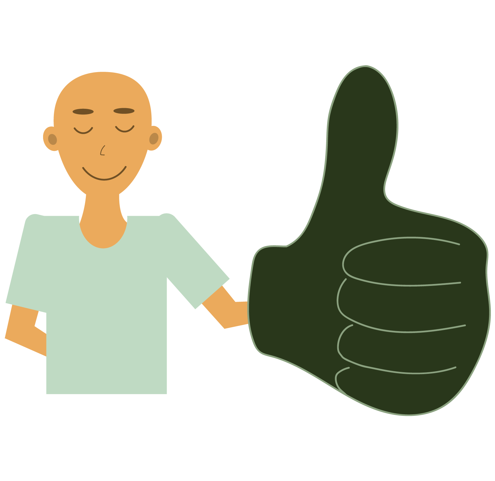

Tips
Het initiatief legt de nadruk op duurzaamheid, plantaardig voedsel, biologische teelt en korte voedselketens.
Leer hier hoe je jouw groene leerproces alvast in gang kan zetten, of wordt simpelweg geïnspireerd. Laten we samen onze groene vingers op deze groene weg ontdekken!
Wees bewust
De meest kleine tip, die groter is dan je wellicht in eerste instantie zou denken: denk bewust na over wat je eet.
Lees meer...Eet biologisch
Dit kan bij een biologische supermarkt maar ook bij de bio-afdeling van jouw favoriete supermarkt.
Lees meer...Mini moestuin
Kruidenplantjes/ moestuintjes in je keuken (of studentenkamer). Klein, toch leuk en duurzaam.
Lees meer...Het balkon
Hangplanten op het balkon of eetbare groenten zijn een prima mogelijkheid voor meer groen!
Lees meer...Moestuin
Een moestuin of kas in je tuin, of eentje huren in de stad (of natuurlijk bij de Groene Leerweg!).
Lees meer...Kamperplanten
Een bonustip! Gaat een van de bovenstaande opties je echt niet lukken? Denk eens aan kamerplanten.
Lees meer...